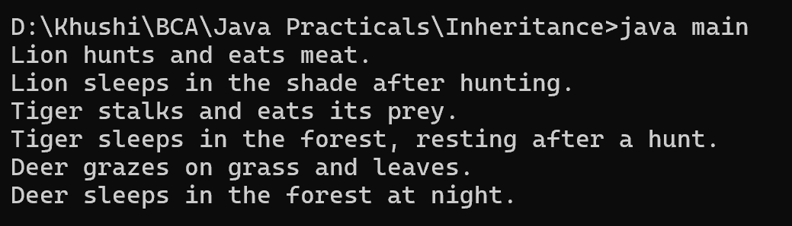

18. Write a Java program to create an abstract class Animal with abstract methods eat() and sleep(). Create subclasses Lion, Tiger, and Deer that extend the Animal class and implement the eat() and sleep() methods differently based on their specific behavior.
abstract class Animal {
public abstract void eat();
public abstract void sleep();
}
class Lion extends Animal {
@Override
public void eat() {
System.out.println("Lion hunts and eats meat.");
}
@Override
public void sleep() {
System.out.println("Lion sleeps in the shade after hunting.");
}
}
class Tiger extends Animal {
@Override
public void eat() {
System.out.println("Tiger stalks and eats its prey.");
}
@Override
public void sleep() {
System.out.println("Tiger sleeps in the forest, resting after a hunt.");
}
}
class Deer extends Animal {
@Override
public void eat() {
System.out.println("Deer grazes on grass and leaves.");
}
@Override
public void sleep() {
System.out.println("Deer sleeps in the forest at night.");
}
}
class main {
public static void main(String[] args) {
Animal lion = new Lion();
lion.eat();
lion.sleep();
Animal tiger = new Tiger();
tiger.eat();
tiger.sleep();
Animal deer = new Deer();
deer.eat();
deer.sleep();
}
}
